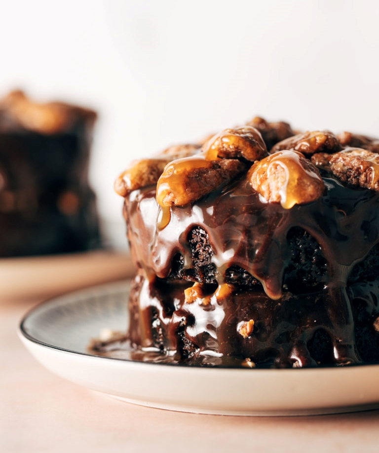

Intensely rich chocolate cake with waterfalls of caramel and pecan jewels inspired by the delicious turtle cake from Cafe Latte. The perfect dessert for two! Or six! Or one!
Go to Recipe We are kicking off the February Fun Series with the most fun thing around. An extra rich, coffee-spiked, chocolatey, caramelly little copycat turtle cake that absolutely has our hearts and will have yours, too. Okay, if you are a resident Twin Citizen and you’ve wandered down bustling Grand Avenue in St. Paul and found yourself drawn in by those bright swoopy pinky-red neon letters that say “Cafe Latte,” then you surely have met and fallen deeply, madly, wholly in love with their turtle cake. It is a thing of glory.
That is the story here. An intensely rich chocolatey cake, cascading with caramel, and jeweled with huge pecans. Layers on layers, possibly too many layers, and also never enough layers. This cake means business. This cake means “I love you.” This is the stuff date nights are made of.
SO OBVIOUSLY IT HAD TO BE FIGURED OUT HOW TO BE MADE AT HOME. Because, even though it is worth a trip to St. Paul literally always, a trip into St. Paul cannot always be had. (Unless you maybe live right off of Grand Ave. in which case, would you like a bunch of new roommates? We also come with children and pets.)
So here we are, a (maybe not so) tiny turtle cake for two. Or six. Or one. Let your heart decide.
To make this fun little cake (or pair of cakes) happen, you’ll need to gather your baking staples and your Bake-Off fortitude. JK, you’ll just need your love of chocolate and excitement for cake, we don’t need any Hollywood Handshakes around here – although, you will deserve one, promise.
For the frosting and toppings we used store-bought caramel to save time and used candied pecans because we’re a little extra (plain toasted ones are also great).
It is somehow always more fun to make a tiny version of something, right? Because, “Look at that cute little caaaaake!” And luckily, making it miniature isn’t really any more work than making a big one happen, so here we go!
Hot tip, hot tip — it’s great to chop the pecans for the middle layers so the cake stacks nicely and the texture is very pleasing. But then we leave them whole on top for optimal beautiful fanciness.
Do you have any recommendations for arranging the pecans?
Chop the pecans that go in the middle layers (easier to eat) and then use the whole pecans on top (pretty to look at).
Any tips on frosting the cake?
When you’re frosting the cake, you’ll want to spread the frosting just to the edge and a little past it so that it doesn’t completely drip down but just kind of waterfalls over the edge. It works well to just let it naturally drip down the cake vs. actually spreading it over the sides.
What size of ramekin do you suggest for making this?
8-ounce ramekins are perfect here (affiliate link). The ones in our kitchen are 4 inches wide and about 2 inches tall.
What kind of pecans should I use?
Regular toasted pecans work, but why not take it over the top with candied pecans?! You will not regret it.
INGREDIENTS
Chocolate Cake :
Chocolate Frosting :
Toppings:
INSTRUCTIONS